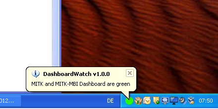
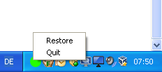
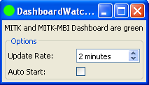

Beschreibung
Simples Tray Icon zur Überwachung des Dashboard Status der MITK/MBI Repos.

Installation
Windows x32 ZIP Paket:
DashboardWatch-1.0.0-win32.zip
Windows x32 ZIP Paket:
DashboardWatch-1.0.0-win32.zip
Ubuntu x64 Executable (Qt 4.x muss installiert sein):
DashboardWatch-1.0.0-win32.zip
Selbst kompilieren:
git clone git@github.com:MichaelMueller/DashboardWatch.git
cd DashboardWatch
git checkout v1.0.1
cmake .. -DCMAKE_BUILD_TYPE:STRING=Release -DQT_QMAKE_EXECUTABLE:FILEPATH=/usr/bin/qmake
make
./DashboardWatch
Benutzung
Das Tray-Icon ruft alle x Minuten (einstellbar in den Optionen) den Status des Dashboards ab. Dabei färbt sich das Icon grün, wenn sowohl MITK als auch MBI grün sind. Das Icon wird rot-grün, wenn MBI rot ist, MITK aber nicht. Das Icon wird rot, wenn beide rot sind.
Rechts-Klick auf das Tray Icon öffnet das Untermenü:

"Update Now" ruft den aktuellen Status des Dashboards nochmal manuell ab.
"Quit" beendet das Programm sofort.
Durch "Restore" oder per Doppelklick öffnet sich das Fenster mit den Optionen:

Die "Update Rate" bestimmt den Timeout bis zum Abrufen des Dashboard Status. Minimal eine Minute. Standard: 2 Minuten.
Das Autostart Feature führt das Programm beim nächsten Booten automatisch aus.
Limitierungen
In Version 1.1.0 funktioniert das Autostart Feature nur unter Windows.